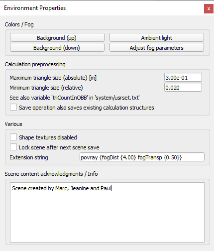

|
Environment dialog
The environment dialog can be accessed with [Menu bar --> Tools --> Environment] or by double-clicking following icon in the scene hierarchy:
[Environment icon]

[Environment dialog]
Background (up / down): allows adjusting the background color of a scene. The up component corresponds to the upper part of the screen (sky), the down component corresponds to the lower part of the screen. The background colors are only visible when the fog functionality is disabled.
Ambient light: allows adjusting the ambient light of a scene. The ambient light can be seen as the minimal light of a scene, it illuminates an object in the exact same way from all directions. See the section about lights for more details about illumination of a scene.
Adjust fog parameters: allows to adjust various fog parameters.
Maximum triangle size (absolute): this item will not affect the visual appearance of shapes. It will however affect the execution speed of most CoppeliaSim calculations. When performing minimum distance calculations for instance, between two entities, execution will generally be faster if both entities are composed by similar-sized triangles. The maximum triangle size value specifies how the internal representation of a shape is handled (i.e. how elaborate the shape's calculation structure is). Small sizes will increase the preprocessing time, but generally the simulation execution speed will be increased at the same time. This value sets the overall maximum triangle size, as an absolute value. See also next item and the reduce triangle size-item in the triangle edit mode.
Minimum triangle size (relative): similar to previous item, but this item helps avoiding creating too large calculation structures that might potentially take very long. This value sets the minimum triangle size, as a relative value (relative to a given object's largest dimension).
Save operation also saves existing calculation structures: for distance calculations, collision detections, etc. a data structure is computed at the beginning of a simulation (preprocessing), or the first time a shape is involves in such calculations, in order to speed-up calculations. Calculation of that data structure might be time consuming, so the user can chose to save it together with the scene or model. However one has to be aware that the additional information that will be saved is large and will result in larger files (sometimes twice as large or more).
Shape textures disabled: if selected, then all textures applied to shapes will be disabled.
Lock scene after next scene save: select this item if you want to lock your scene from edition/modification, script content viewing and resource export. After next scene save operation, the scene will be locked. Make sure you have saved the same scene in an unlocked state if you want to be able to modify it at a later time.
Extension string: a string that describes additional environment properties, mainly used by extension plugins (see also the sim.getExtensionString API function).
Scene content acknowledgements / Info: information related to a scene. It is always good practice to acknowledge the original author of a scene, model, or imported mesh. When a scene that contains acknowledgment information is opened, it will automatically display that information.
|